Five films (c01, c03, c04, c05, c08), rewritten around what the Clone feature actually does. Nothing is generated until you approve. 29 Oct.
The problem: every brand starts each new ad from a blank page. They guess at ideas, don't know which ones to test, and pay to find out which ones flop.
The insight: other brands in your category have already done that testing. If a brand keeps an ad live for more than 60 days, it is selling. Nobody keeps paying for an ad that doesn't.
The feature: Ad Radar in Brevo Ad Studio shows you those long-running ads from real brands in your niche. You pick one and hit Clone for my product. It rebuilds that same ad, with the same layout, the same hook and the same structure, around your product, brand and offer, and you launch it in seconds.
The payoff: you skip ideation and guesswork and start from an ad that is already proven in your category.
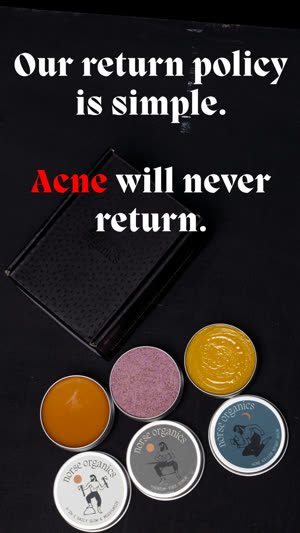
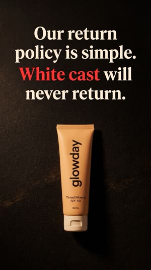
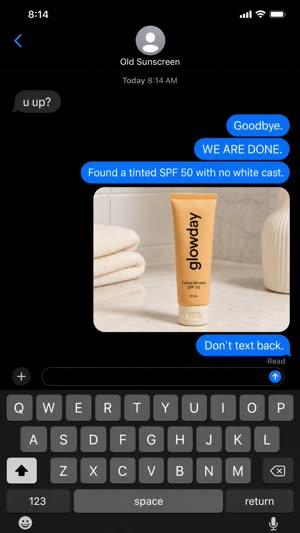
| c01 | Rewrite. New spine: blank page, then 60-day winners, then clone. Keeps 4 takes, needs 3 new Veo clips. | about $9.60 (up to $19.20 with regenerations) |
| c05 | Rewrite of the middle. The Radar and clone beats are rebuilt. The maths now works: 5 ads from the link plus 4 clones is 9 ads. Keeps 5 takes, needs 3 new Veo clips, plus 3 more guided clones made in Ad Studio. | about $9.60 (up to $19.20), plus in-app credits |
| c08 | Rewrite. Faceless narrator, so it is TTS only. Same new spine, and "90 days" becomes "60 days". | under $1 |
| c03 | Script unchanged (it's about AI creators). The outro visual is fixed: a Radar winner with a 60+ DAYS chip, then its same-template clone. | $0 |
| c04 | Script unchanged except the agent outro, whose clip is already made. Same outro visual fix as c03. | $0 |
Each film's $20 cap for v3 is mostly spent (c01 $16.21, c05 $19.58). This round needs a fresh cap of about $20 each for c01 and c05.
| 1 | "This ad, from a skincare brand just like yours, has been running for two years, and nobody keeps an ad running that long unless it sells." | 26 w | REUSE n1 the only 2-year line |
| 2 | "Most brands start every new ad from a blank page, guessing which ideas to test and paying to find out which ones flop." | 23 w | NEW Veo corridor walk |
| 3 | "Brevo Ad Studio's Ad Radar shows you the ads other brands in your category keep running, and anything live past sixty days is a proven seller." | 26 w | NEW Veo sunlit office. Brand line 1 |
| 4 | "With Brevo Ad Studio, you can copy that exact winning ad for your own product and launch it in seconds." | 19 w | REUSE n2b |
| 5 | "It rebuilds the same idea around your product, your brand and your offer, so the hook stays and everything else becomes yours." | 23 w | REUSE c5b white studio, kraft box |
| 6 | "So instead of guessing what to test, you launch an ad that's already proven to sell in your category." | 19 w | NEW Veo sidewalk walk |
| 7 | "Try Brevo Ad Studio today. Start for free, your first three ads are free. Tap below and find your winning ads." | 21 w | REUSE n3b Brand line 2 + CTA |
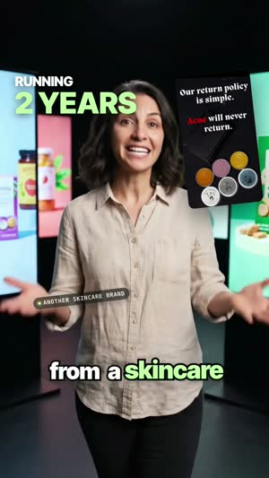
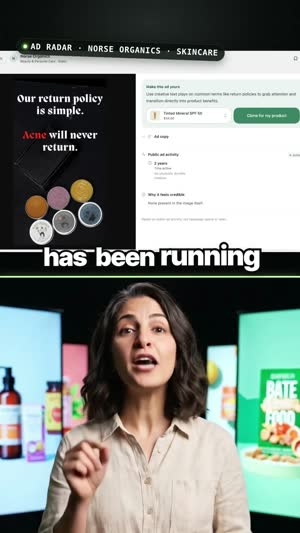
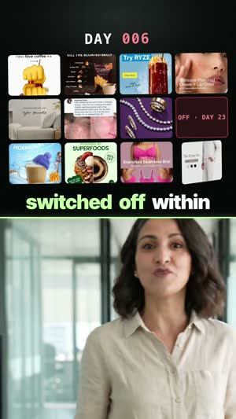
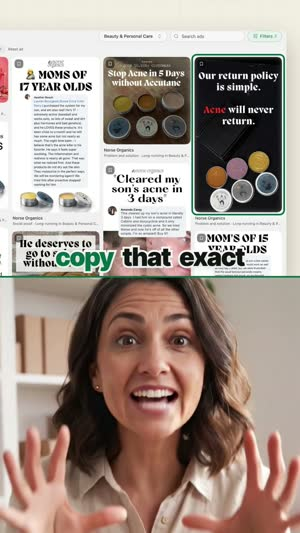
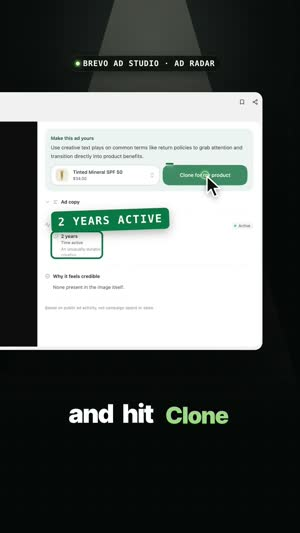
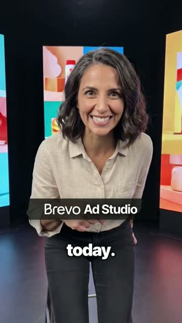
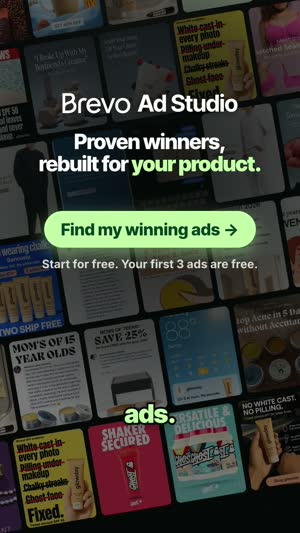
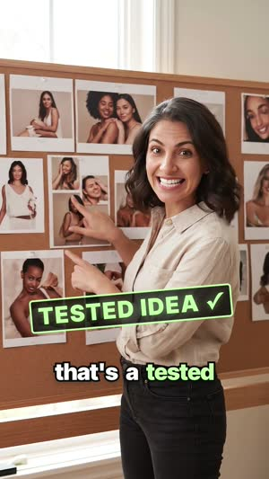
| 1 | "I made nine ads for a sunscreen brand before lunch today, in less time than it takes to brief a designer. Here's how I did it." | 26 w | REUSE c1 |
| 2 | "I pasted one product link into Brevo Ad Studio, and it pulled in the photos, the price and the reviews all by itself." | 23 w | REUSE n2b Brand line 1 (weakest Brevo, see note) |
| 3 | "It even set up the brand's colors and fonts, and five finished ads came back in about a minute." | 19 w | REUSE c3 |
| 4 | "But I didn't want to guess which ones to test, so I opened Ad Radar to see what skincare brands keep running." | 21 w | NEW Veo street side-track |
| 5 | "When a brand keeps an ad live past sixty days, it's selling, and this one's been running for two years." | 20 w | NEW Veo street selfie, tube. Only 2-year line |
| 6 | "So I cloned four winners for my own sunscreen, same layout, same hook, just my product and my offer." | 19 w | NEW Veo brownstone steps |
| 7 | "That's nine ads before lunch from one product link, and I never opened a design tool once." | 17 w | REUSE c6 |
| 8 | "Try Brevo Ad Studio and find your own winning ads. Start for free. Your first three ads are free." | 19 w | REUSE n7 Brand line 2 + CTA |
The old middle is replaced: "I picked one that's been live for two years... nobody keeps an ad running for two years... copied that exact winning ad." It mentioned two years twice and showed one clone, which didn't add up to nine.
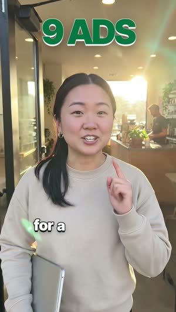
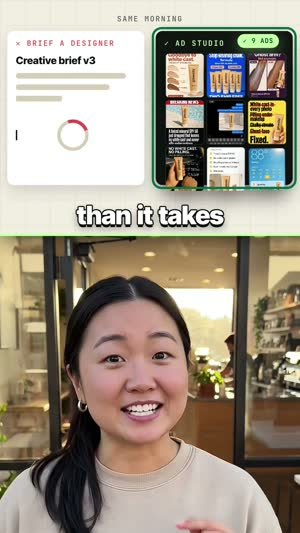
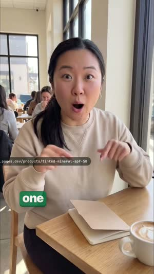
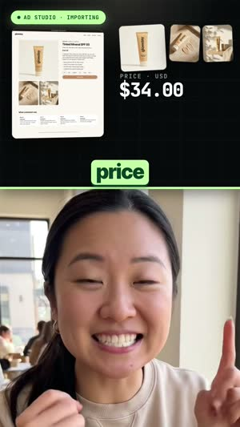
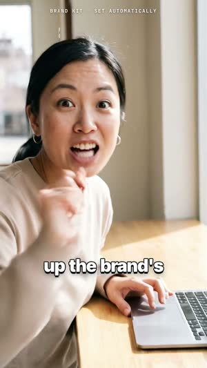
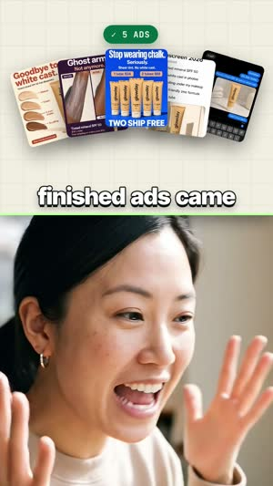
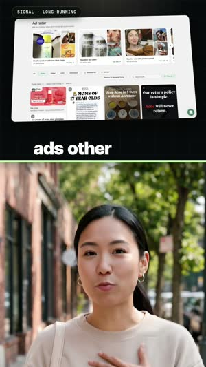
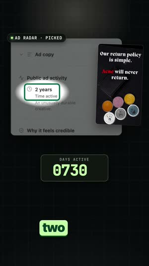
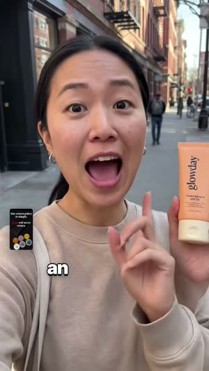
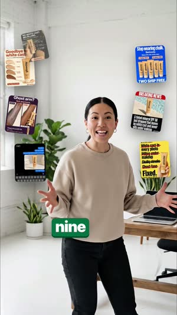
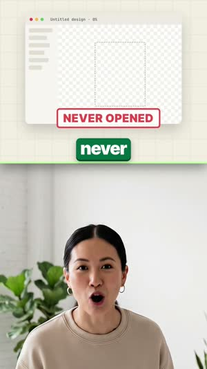
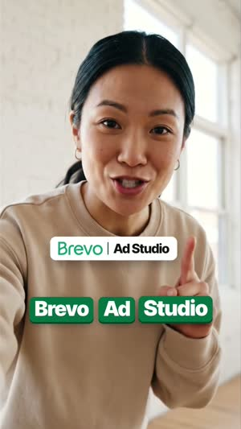
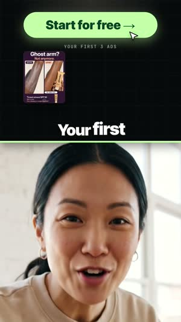
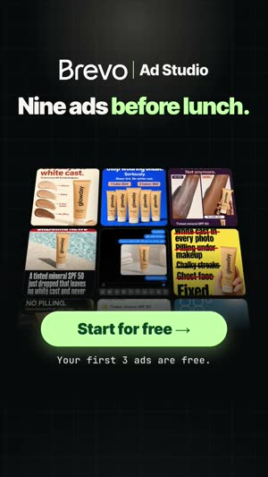
Option: line 2's "Brevo" is the weakest pronunciation of all five films, and its two generations are used. It could be regenerated as a fresh clip for about $3.20 if you want it cleaner.
| 1 | "Every new ad starts the same way: a blank page, a guess, and a test budget you hope isn't wasted." | 19 w | TTS |
| 2 | "But brands in your category have already run those tests, and the ads they keep running are the ones that sell." | 21 w | TTS |
| 3 | "With Brevo Ad Studio, Ad Radar shows you those ads, sorted by how long they've been live." | 16 w | TTS Brand line 1 |
| 4 | "Anything still running after sixty days is a proven seller. This skincare ad has been live for two years." | 19 w | TTS only 2-year line |
| 5 | "It isn't the tins or the brand that sells it. It's the hook, the structure, the proof and the offer." | 20 w | TTS |
| 6 | "So pick a winner and hit Clone for my product. It rebuilds that same ad, same layout and same hook, around your product, your brand and your offer." | 28 w | TTS |
| 7 | "Same ad, your product, ready to launch in seconds." | 9 w | TTS |
| 8 | "No more guessing what to test. You start from an ad that's already proven in your category." | 17 w | TTS |
| 9 | "Start for free. Your first three ads are free, and plans start at nineteen dollars a month." | 17 w | TTS CTA |
| 10 | "Tap below and find your winning ads with Brevo Ad Studio today." | 12 w | TTS Brand line 2 |
Dropped from v3: the repeated "two-year skincare ad", "ninety days", and the "paste a product link, five ads in a minute" detour, so the film stays on the clone story.
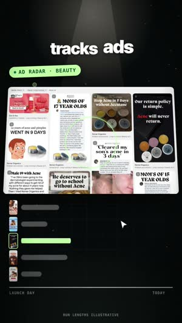
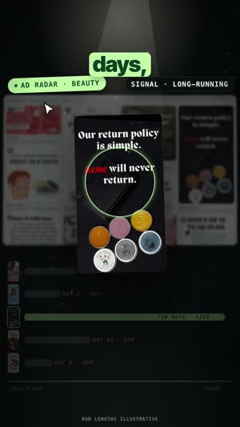
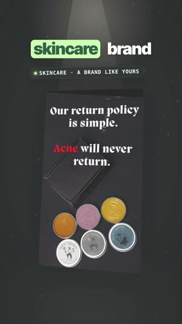
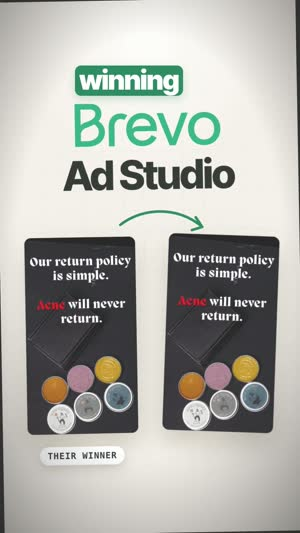
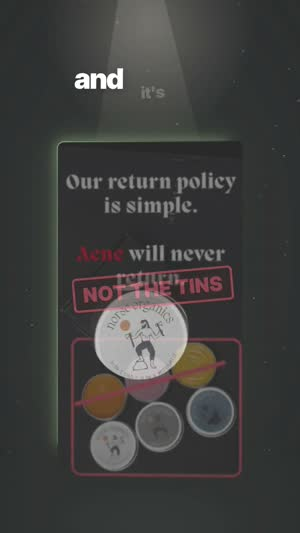
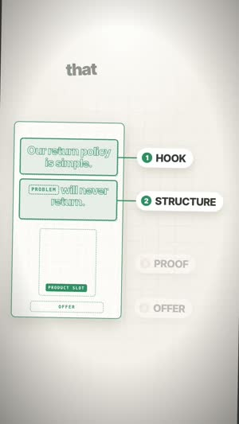
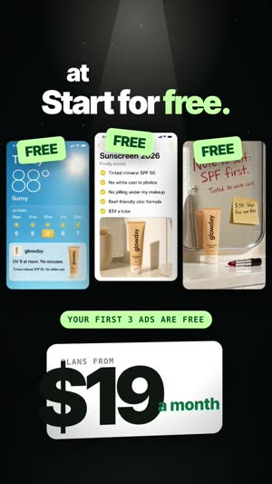
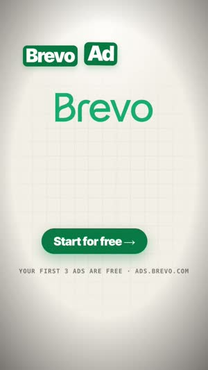
This film is about AI creators, not cloning, so the script stays as in v3.1. The outro line "Paste your product link into the chat, and the agent does everything, from finding you a winning ad to launching it." now shows the clone correctly:
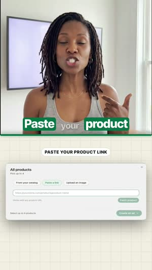
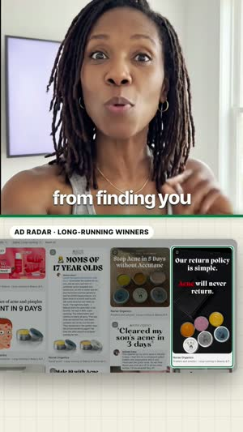
Lines 1 to 7 stay as in v3. The new last line is already generated and transcribes clean: "Paste your product link into the chat, and the agent does everything, from finding you a winning ad to launching it." It is followed by the existing CTA "It's called Brevo Ad Studio... Start for free. Your first three ads are free." The visuals under the outro follow c03: Radar winner with 60+ DAYS, then its same-template clone. The re-cut was paused mid-edit until you approve.
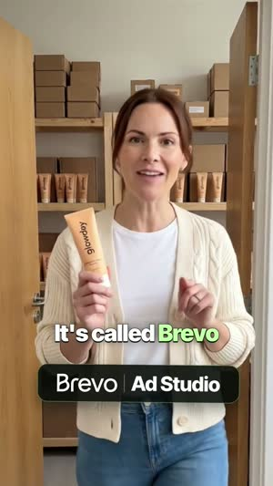
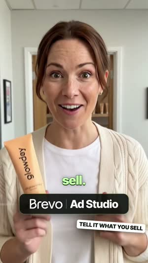